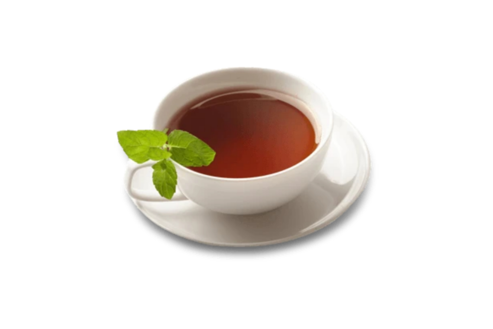

TEA
Tea is a popular beverage made by steeping dried or processed tea leaves in hot water. It is one of the most widely consumed drinks in the world, known for its various flavors, aromas, and cultural significance.
Here are some key points about tea:
1. Types of Tea: There are several main types of tea, which all come from the Camellia sinensis plant. These include black tea, green tea, white tea, oolong tea, and pu-erh tea. Each type undergoes different levels of oxidation and processing, resulting in distinct flavors and colors.
2. Caffeine Content: Tea contains caffeine, a natural stimulant, but generally in lower amounts compared to coffee. The caffeine content varies depending on the type and preparation of the tea.
3. Flavor Profiles: Different types of tea have varying flavor profiles. For example, black tea is often robust and full-bodied, while green tea tends to have a more delicate and grassy taste. Oolong tea falls between black and green tea in terms of flavor.
4. Health Benefits: Tea is often associated with health benefits. It contains antioxidants called catechins, which may help protect cells from damage. Some studies suggest that regular tea consumption may be linked to improved heart health, reduced risk of certain cancers, and other health advantages.
5. Cultural Significance: Tea has deep cultural roots in various countries. It plays a central role in ceremonies, rituals, and social gatherings in cultures like Chinese, Japanese, English, and Indian.
6. Herbal Teas: In addition to true teas from the Camellia sinensis plant, there are also herbal teas or tisanes. These are made from infusions of various herbs, flowers, fruits, and spices. Popular herbal teas include chamomile, peppermint, and rooibos.
7. Preparation: Brewing tea involves steeping the tea leaves in hot water for a specific amount of time. The temperature and steeping time can vary depending on the type of tea and personal preference.
8. Tea Culture: In many cultures, tea is more than just a beverage—it's a way of life. It can be a symbol of hospitality, a meditative practice, or an important part of social gatherings.
9. Varieties and Blends: There are countless varieties and blends of tea available worldwide, each with its unique characteristics and flavors. Some teas are blended with herbs, spices, or other flavorings to create distinct tastes.
Whether enjoyed hot or cold, with or without additives like milk or sweeteners, tea remains a beloved and versatile beverage appreciated by people of all ages and backgrounds. It continues to evolve in terms of flavors, preparations, and cultural significance around the world.